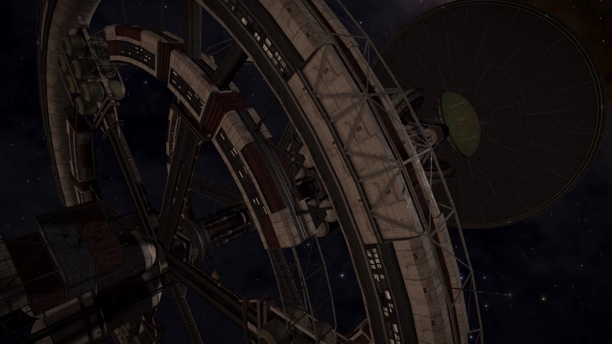
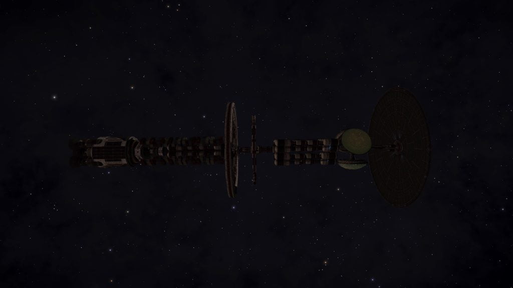

Thetis is an abandoned Generation Ship that can be found in the Nefertem system, orbiting body 6 a.
The location is revealed by the Listening Post in the LHS 2206 system, orbiting body 2:
ANOMALOUS SIGNAL DATA
…Transponder Signal THE-288-A Detected…
Matching Signal Detected. Nefertem. Time Stamp Predates Parameters.
I’ve done it…signal…identify…confusing…originates…Who sent it…idea…good news…message…translator….again and again… It says…
…Signal Lost…

A series of five Ship Log Uplink points can be located along the hull. Deploy your ship’s hardpoints and use the onboard Data Link Scanner within 200m of each post to scan them and retrieve the logs. In addition to the text, each log is accompanied by an audio recording:
MADNESS AND GHOSTS 1/5
Comms Log 905.2.34
Still all quiet out here in the black. Just had our very first ninth-gen child born on ship. That takes the current population to 17,401. Other than that, nothing out of the ordinary. Apart from reports from some residents at the northern end of C-Deck. They’ve heard some kind of strange whispering sound coming from their apartment comms unit. I’m sure it’s nothing, but I’ve dispatched a member of tech to investigate.
MADNESS AND GHOSTS 2/5
Comms Log 907.6.34
We have an emergency situation on board. Some kind of epidemic, it’s driving people insane. I’ve managed to source it to a digital signal that keeps broadcasting within the comms array. It started on C-Deck, but now the entire population of decks C to F have been massacred. They just went crazy and started killing each other.
I’ve isolated the signal, so it’s stopped for now. Just trying to identify the source. It should be easy enough to delete the beacon if I can find the right frequency. I wanna know what the message says, but I’m… I’m just too scared to listen.
MADNESS AND GHOSTS 3/5
Comms Log 908.7.34
I’ve done it. I’ve managed to decrypt the signal and identify the source. But it’s even more confusing than I thought. The signal originates from an uninhabited planet we passed 15 light years ago. Who sent it and how it managed to infect the comms array I have no idea.
That’s the good news. The bad news is, I heard the message. I was trying to run it through the translator and I forgot the speaker was on. It’s the same message relayed again and again and again – it’s more a whisper than anything else; it says, ‘kill them all’…
MADNESS AND GHOSTS 4/5
Comms Log 900.0.04
Blood. Blood everywhere. It’s spread on the walls – people have started writing words in it but it’s a script I can’t identify. I’m alone now on the comms deck. Pearson was the last one with me but I had to stab him in the throat to stop him… stop him… I can’t remember what I had to stop him doing but… he’s dead now.
I can hear people out there. Some of them are still walking around. Some of them are barely breathing. I have to find them. I have to silence them. I have to…
MADNESS AND GHOSTS 5/5
C_mm_ Lo_ 000.0.00 ….k.l……h.m……..l……………….
